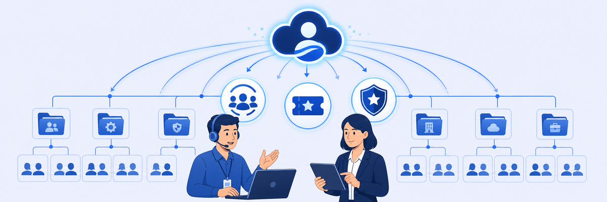

Lab 2: Configure User and Administrator Access Entitlements
Scenario: You've secured the Zscaler console and now need to establish a clean foundation for who can sign in and what they can access in Labtenant.com. Two new users — Joe (Support/helpdesk) and Bev (IT/admin) — must be onboarded with the right departments and groups so they inherit the correct entitlements.

Entitlements in Zscaler determine what services a user can access (service entitlements) and what they can configure in the admin console (administrative entitlements). Getting the identity hierarchy right — department → user group → user — is what makes policies and role-based access work at scale.
- Bev is placed in the built-in "Zscaler Global Administrators" group rather than a custom group. What is the risk of always granting full super-admin access, even to trusted IT staff?
- Joe receives the "Executive Insights App" role for ZIA — a predefined read-only role. Why might Zscaler provide pre-built roles rather than requiring admins to always create custom ones?
- A service entitlement (ZIA) is assigned to Helpdesk L1 group, while an administrative entitlement (ZIA read-only) is also assigned. What is the difference between these two types, and could you have one without the other?
The table below summarizes what you'll configure:
| User | Task | Department | User Group | Service Entitlement | Admin Entitlement |
|---|---|---|---|---|---|
| Joe | 2.2 | Support | Helpdesk Level 1 | ZIA (Read-only), ZDX (Read-only) | |
| Joe | 2.3 | Support | Helpdesk Level 1 | ZIA | |
| Bev | 2.2 | IT | Zscaler Global Administrators (built-in) | ZIdentity, Workflow Automation, ZIA, ZPA, ZDX, ZCC, Cloud & Branch Connector, Business Insights |
Task 2.1: Create Departments and User Groups
1 Navigate to Departments
- In the Zscaler Admin Console, select the Administration tab.
- Go to Identity > Departments.

2 Create the Support department
- Select Add Department.
- Enter: Department Name: Support | Description: Support Department
- Click Save.

3 Create the IT department
- Select Add Department and enter: Department Name: IT | Description: IT Department
- Select Save.

4 Confirm departments and create Helpdesk L1 user group
- Confirm that IT and Support appear in the Departments section.
- Go to Identity > User Groups.
- Select Add User Group.
- Enter User Group Name: Helpdesk L1
- Click Save.


Task 2.2: Create Users
1 Create User Joe
- From the left navigation panel, go to Users.
- Click Add User and set:
- Login ID:
joe@<Student FQDN> - Name: Joe | First Name: Joe
- Same As Login ID: Enabled
- Primary Email:
joe@<Student FQDN> - Department: Support
- Login ID:
- Click Assign Groups and select Helpdesk L1.
- Click Security Settings tab:
- Password option: Set By Administrator
- Password / Confirm Password: Admin-123!
- Prompt for Password Change After Initial Login: Unchecked
- Multi-Factor Bypass — Skip Second Factor Authentication: Enabled
- Skip until: Set as far out as allowed
- Navigate to Additional Attributes tab. Under INFORMATION set: SyncZPA: Zscaler
- Click Save.


Note: Setting SyncZPA to Zscaler tells the lab environment to sync this user with ZPA so later ZPA labs and lab-reset scripts function correctly. For lab purposes, the second factor of authentication is skipped. Zscaler recommends enabling MFA for all users in production.
2 Create User Bev
- Click Add User and set:
- Login ID:
bev@<Student FQDN> - Name / First Name: Bev
- Same As Login ID: Enabled
- Primary Email:
bev@<Student FQDN> - Department: IT
- Login ID:
- Click Assign Groups and select Zscaler Global Administrators.
- Click Security Settings tab — configure same password settings as Joe (Admin-123!, MFA bypass enabled, skip as far out as allowed).
- Navigate to Additional Attributes — set SyncZPA: Zscaler
- Click Save.
Task 2.3: Add Administrative and Service Entitlements
1 Assign ZIA Admin Entitlement to Helpdesk L1
- Navigate to Administration > Admin Management > Role Based Access Control > Administrative Entitlements.
- Click Zscaler Internet Access.


2 Assign Helpdesk L1 to ZIA with Executive Insights App role
- In the ZIA Administrative pane, click Assign Groups.
- Select the checkbox for Helpdesk L1 Group.
- From the Role drop-down, select Executive Insights App.
- Click Next and Assign.


Note: The Executive Insights App role provides read-only access to the Zscaler portal. In production, create a custom role under Administration > Admin Management > Role Based Access Control > Roles for finer control.
3 Assign ZDX Admin Entitlement to Helpdesk L1
- Select the Back option next to "Assign Groups" to return to the entitlements list.
- Click Zscaler Digital Experience.
- Click Assign Groups. Select Helpdesk L1. From the Role drop-down, select ZDX Read-only Admin.
- Click Next and Assign.


4 Assign ZIA Service Entitlement to Helpdesk L1
- Navigate to Administration > Entitlements > End User Entitlements > Service Entitlements.
- Click Zscaler Internet Access.
- Click Assign Groups. Select checkbox for Helpdesk L1.
- Click Next and Assign.


Task 2.4: Validate Entitlement Access for Users
1 Verify Joe's entitlements in the user profile
- Navigate to Administration > Identity > Users.
- Click the Edit button (pencil icon) for user Joe.
- Navigate to the Entitlements tab and verify both Administrative and Service entitlements are assigned.


2 Validate Joe's restricted admin view
- On the Corp: Client PC, open a new incognito window in Chrome.
- Navigate to the Experience Center:
https://console.zscaler.com/ - Authenticate as Joe: Username
joe@<Student FQDN>| Password: Admin-123! - Confirm that the Administration and Policy tabs are restricted compared to the Student admin user — Joe cannot access Admin Management or Sign-On Policies.
- Confirm Joe can only view existing Digital Experience data and cannot create or modify objects.
- Click the Account settings icon (top right) to Sign out.


Note: The Helpdesk Level 1 Group has read-only privileges for ZIA and ZDX. Joe inherits this read-only access, which removes access to core administrative areas and limits him to view-only analytics and experience data.
3 Validate Bev's full admin access
- In the same incognito window, navigate to
https://console.zscaler.com/ - Authenticate as Bev: Username
bev@<Student FQDN>| Password: Admin-123! - Navigate to Administration > Admin Management > Sign-On Policies.
- Confirm the Add Rule button is enabled — Bev has full admin access as a member of Zscaler Global Administrators.
- Sign out via the Account settings icon.


4 Validate Joe's ZIA service entitlement via Zscaler Client Connector
- On the Corp: Client PC, in the Windows taskbar (bottom-right corner), click the Show hidden icons arrow ^.
- Select the Zscaler Client Connector icon, then click Open Zscaler.
- Authenticate with Joe's account:
joe@<Student FQDN>/ Admin-123! - Click Sign in.
- In the ZCC console, verify that Internet Security is ON for user Joe.
- After verifying, log out of Zscaler Client Connector.